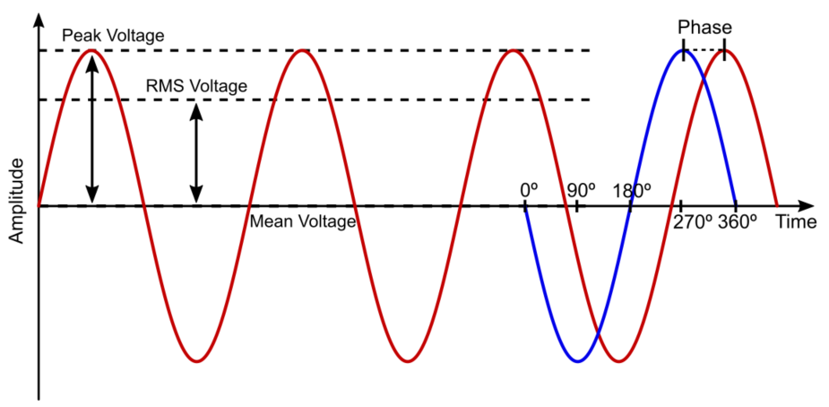
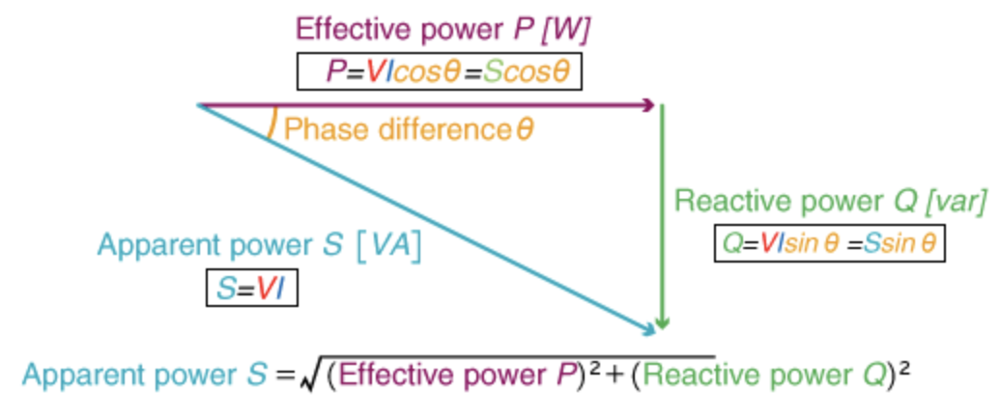
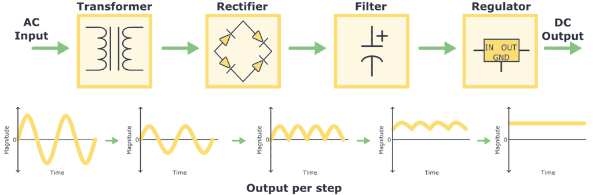
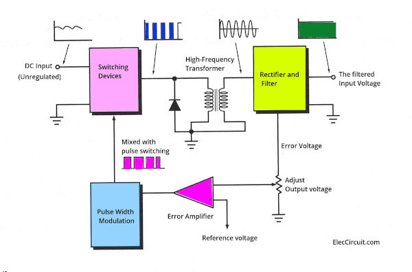
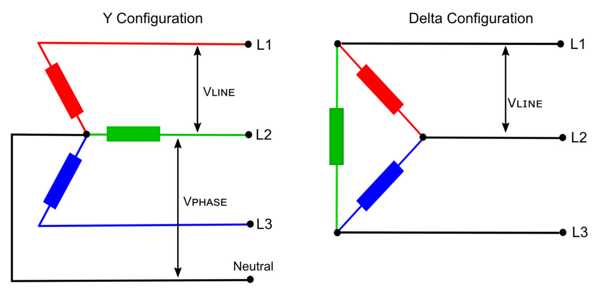
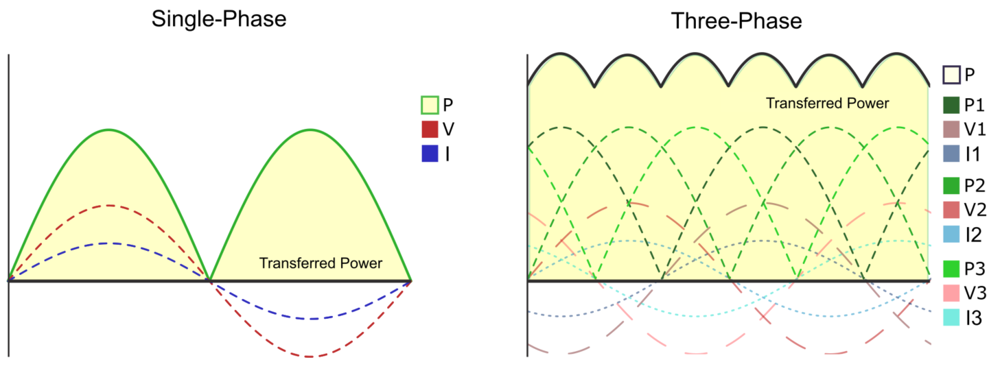

What is AC and DC power/current#
Author: Melika Dehestani
Gmail: dehestanimelika2004@gmail.com
Fall 2024
Introduction#
A power supply is an electrical device that converts the electric current that comes in from a power source, such as the power mains, to the voltage and current values necessary for powering a load, such as a motor or electronic device. The objective of a power supply is to power the load with the proper voltage and current. The current must be in an controlled manner and with an accurate voltage. The one thing all power supplies have in common is that they take electric power from the source at the input, transform it in some way, and deliver it to the load at the output. The power at the input and output can be either alternating current (AC) or direct current (DC):
Direct current (DC):
occurs when the current flows in one constant direction, as compared to the flow of the river. It usually comes from batteries, solar cells, or from AC/DC converters. DC is the preferred type of power for electronic devices.
Alternating current (AC):
occurs when the electric current periodically inverts its direction (negtaive and positive sides switch periodically). AC is the method used to deliver electricity through power transmission lines to homes and businesses.
Characteristics of alternating current#
The typical waveform for an alternating current is a sine wave, when working with an AC power supply there are several indicators that must be taken into account:
Peak voltage/current: The maximum value of amplitude the wave can reach.
Frequency: The number of cycles the wave completes per second. The time it takes to complete a single cycle is called the period.
Mean voltage/current: The average value of all the points the voltage takes during one cycle. In a purely AC wave with no superimposed DC voltage, this value will be zero, because the positive and negative halves cancel each other out.
Root-mean-square voltage/current: It is defined as the square root of the mean over one cycle of the square of the instantaneous voltage. In a pure AC sinusoidal wave, its value can be calculated with: $\(V_{RMS}=\frac{V_{PEAK}}{\sqrt{2}}\)$ It can also be defined as the equivalent DC power needed to produce the same heating effect. Despite its complicated definition, it is widely used in electrical engineering because it allows you to find the effective value of an AC voltage or current. Because of this, it is sometimes expressed as VAC.
Phase: The angular difference between two waves. A complete cycle of a sine wave is divided into 360°, starting at 0°, having peaks at 90° (positive peak) and 270° (negative peak) and crossing the start point twice, at 180° and 360°. If two waves are plotted together, and one wave reaches its positive peak at the same time that the other reaches its negative peak, then, the first wave will be at 90°, while the second wave will be at 270°; this means the phase difference is 180°. These waves are considered to be in antiphase, as their values will always have opposite signs. If the phase difference is 0°, then we say the two waves are in phase.
Here we see an example of an AC wave:

Advantages and disadvantages of DC power supply#
Direct current, in which electricity always flows in a constant direction, has the following merits and demerits:
In alternating current, the direction of the current is constantly changing. Therefore, when a capacitor or inductor is included in the circuit, for example, there is a delay or advance in the current flowing to the load in relation to the voltage behavior. However, with direct current, the voltage and the direction of the current are always constant, so the behavior of the capacitors and coils is also always constant. Therefore, in DC, there is no advance or delay in the circuit.
In alternating current (AC), the direction of the current is switched, so not all the electricity passes through the load, and some power is generated just traveling back and forth between the load and the power source. This is called reactive power, which will be discussed in later chapters. In direct current, all electricity passes through the load because the current always flows in a constant direction. Therefore, no reactive power is generated and power can be used efficiently.
Another advantage of direct current is that it can be stored by batteries or capacitors.
When a direct current flows through a circuit, it encounters various components, such as resistors, capacitors, and inductors, all of which influence its behavior. Resistors restrict current flow. There is no continuous current flow through the capacitor, while the inductor offers almost no resistance to the constant current and acts like a short circuit.
On the other hand, direct current also has its disadvantages. One of them is that it is difficult to interrupt the current. In the case of alternating current, when the voltage switches from positive to negative or negative to positive, the voltage momentarily drops to zero. If you aim for a time when the voltage is low, you can interrupt the current more safely than with a direct current.
Also, when converting DC voltage, it is necessary to convert it to AC once and then back to DC again. For this reason, DC voltage conversion equipment is larger and more costly than AC.
Another disadvantage of direct current is the severe corrosion of underground pipes and insulators required for power transmission.
The plot below shows a diagram of a DC volatge source:
from PySpice.Spice.Netlist import Circuit
from PySpice.Unit import *
import matplotlib.pyplot as plt
import numpy as np
# Create a new circuit
circuit = Circuit('DC Signal')
# Define a DC voltage source
circuit.V(1, 'n1', circuit.gnd, 5@u_V) # DC voltage of 5V
# Simulate the circuit
simulator = circuit.simulator(temperature=25, nominal_temperature=25)
analysis = simulator.operating_point()
# Extract the voltage value
voltage = float(analysis['n1'])
# Time array for plotting (0 to 10 seconds)
time = np.linspace(0, 10, 1000)
# Create an array with the DC voltage value
dc_voltage = np.full_like(time, voltage)
# Plot the DC signal
plt.figure(figsize=(10, 5))
plt.plot(time, dc_voltage, label='DC Voltage', color='blue')
# Adding labels and title
plt.title('DC Signal')
plt.xlabel('Time [s]')
plt.ylabel('Voltage [V]')
plt.axhline(0, color='black', linewidth=0.5)
plt.axvline(0, color='black', linewidth=0.5)
plt.legend()
plt.grid(True)
# Display the plot
plt.show()
---------------------------------------------------------------------------
ModuleNotFoundError Traceback (most recent call last)
Cell In[1], line 1
----> 1 from PySpice.Spice.Netlist import Circuit
2 from PySpice.Unit import *
3 import matplotlib.pyplot as plt
ModuleNotFoundError: No module named 'PySpice'
Advantages and disadvantages AC power supply#
Alternating current, with its cyclic positive and negative voltage, has the following advantages and disadvantages:
Compared to direct current, alternating current can be easily transformed by transformers, making it more suitable for power supply as infrastructure.
Another advantage of AC is that it is easy to shut down while power is being supplied since the timing at which the voltage drops to zero comes periodically.
It can also be used without distinguishing between positive and negative, like a household power supply (outlet), which simplifies the connection and operation of devices.
On the other hand, AC requires a higher voltage than the target voltage for the required amount of heat because the voltage value is always changing, and there are times when the voltage goes to zero. The waveform of AC voltage is sinusoidal, and the maximum voltage is √2 times the running value. Insulation performance and equipment specifications must be higher than the effective value.
Another characteristic of AC is that it is strongly affected by coils and capacitors. Coils and capacitors generate voltages that cause the current to flow in the opposite direction of the current direction, causing the current in the circuit to advance or lag.
There are two types of AC: three-phase AC and one-phase AC. A three-phase AC is used specifically for high-voltage power transmission. When it is sent to a household outlet, it is converted to one phase along with the voltage conversion. In a power plant, three waves of AC are sent out at the same time, with the waveform of the AC shifted by 120 degrees. This type of electricity is called a three-phase alternating current. At the end of this chapter we will discuss more about three phase AC.
The plot below shows a Three-phase AC:
import matplotlib.pyplot as plt
import numpy as np
# Time variable (0 to 2π for full cycle representation)
t = np.linspace(0, 2 * np.pi, 1000)
# Three-phase waveforms with 120-degree phase shift
V1 = np.sin(t) # Phase A
V2 = np.sin(t - 2 * np.pi / 3) # Phase B (120-degree shift)
V3 = np.sin(t - 4 * np.pi / 3) # Phase C (240-degree shift)
# Plot the waveforms
plt.figure(figsize=(10, 5))
plt.plot(t, V1, label='Phase A', color='red')
plt.plot(t, V2, label='Phase B', color='blue')
plt.plot(t, V3, label='Phase C', color='orange')
# Adding labels and title
plt.title('Three-phase AC')
plt.xlabel('Time [s]')
plt.ylabel('Voltage [V]')
plt.axhline(0, color='black', linewidth=0.5)
plt.axvline(0, color='black', linewidth=0.5)
plt.legend()
plt.grid(True)
# Display the plot
plt.show()
Active and reactive power in AC sources#
Active power:
Active power is the usable or consumed electrical energy in an AC circuit and has units of watt (W) or kilowatt (kW). True power or real power is another name for active power. Active power is the energy actually used in load. Rector shows how Armstrong finds active power by multiplying together the root mean square (RMS) values of voltage and current, as well as a parameter called the power factor, some measure for reflecting offset between them. The formula for active power is: $\(P=V×I×cosϕ\)$ Where P is the active power, V is the RMS voltage, I is the RMS current, and ϕ is the phase angle between the voltage and current.
Reactive power:
Reactive power is the alternating current flowing back and forth in an electric circuit. The unit used for reactive power is volt-amperes reactive (VAR) or kilovolt-ampere active (kVAR). R.P., a term also used for imaginary power or wattless power, is the form of energy stored and released by the reactive components within current flowing through an electric circuit–most commonly inductors (inductance) and capacitors (capacitance). This power is not useful to the circuit, but it must be maintained for the voltage and current levels. Also, reactive power creates inefficiencies and loss of energy by increasing apparent power, which promotes a greater flow of current. The formula for reactive power is: $\(Q=V×I×sinϕ\)$ Where Q is the reactive power, V is the RMS voltage, I is the RMS current, and ϕ is the phase angle between the voltage and current.
Apparent power:
The apparent power of a sinusoidal AC circuit can be calculated simply as the product of its RMS values for voltage and current. It is measured in volt-amperes (VA) or kilovolt-amps (kVA). Power is called apparent power, complex power, or total gave, and this refers to the net delivered from a source by a line. The apparent power is found by multiplying the RMS values of voltage and current, regardless of any phase relationship. The formula for apparent power is: $\(S=V×I\)$ Where S is the apparent power, V is the RMS voltage, and I is the RMS current.
The relation between active,reactive and apparent power can be seen in the images below:

Linear vs. Switching AC/DC Power Supply#
Linear AC/DC Power Supply:#
A linear AC/DC power supply has a simple design. The components of a linear AC/DC power supply are transformers, rectifier and filter. By using a transformer, the alternating current (AC) input voltage is reduced to a value more suitable for the intended application. Then, the reduced AC voltage is rectified (A rectifier is an electrical device that converts alternating current (AC), which periodically reverses direction, to direct current (DC), which flows in only one direction.) and turned into a direct current (DC) voltage, which is filtered in order to further improve the waveform quality. The process inside a linear DC power supply is described as below:
Transformer: The AC voltage from the wall outlet has a high magnitude, like 110/220 V AC. Thereby, the first thing to do is transform it into a signal with a lower magnitude. This is achieved using a component called a transformer.
Rectifier: Once the AC voltage is transformed, it is then passed through a rectifier. The rectifier converts the AC voltage into pulsating DC voltage by allowing current flow in only one direction and removing the negative portion of the AC waveform.
Filter: After rectifying, a filter is used to smooth out and minimize the pulsating DC voltage. Typically, due to their ability to store energy, capacitors are used in this kind of filter circuit. Regulator: To have a stable DC voltage value output, a voltage regulator is needed. It ensures a constant and stable DC voltage output, compensating for fluctuations in the load or input voltage.

A huge limitation in a linear AC/DC power supply is the size of the transformer. Because the input voltage is transformed at the input, the necessary transformer would have to be very large and therefore very heavy.
Drawing a linear AC/DC power supply using schemdraw#
The code below shows a simple linear power supply:
import matplotlib.pyplot as plt
import schemdraw
import schemdraw.elements as elm
from schemdraw import dsp
with schemdraw.Drawing() as d:
d.push()
elm.Line()
tr = elm.Transformer().right().label('Transformer', loc='bot').anchor('p1')
elm.Line().length(d.unit/3).at(tr.s1)
elm.Line().length(d.unit/2).up()
elm.Line().right()
rec = elm.Rectifier().anchor('N').label('Rectifier')
d.pop()
elm.Gap().toy(tr.p2).label(['', 'AC IN', ''])
elm.Line().tox(tr.p1)
elm.Line().length(d.unit/3).at(tr.s2)
elm.Line().length(d.unit/2).down()
elm.Line().right()
elm.Line().toy(rec.S)
elm.Line().length(d.unit/8).at(rec.W).left()
lineRec = elm.Line().length(d.unit*1.3).down()
lineOne = elm.Line().at(rec.E).right().idot()
line = elm.Line().idot()
lineTwo = elm.Line().length(d.unit/3).idot()
lineThree = dsp.Square().label('Regulator')
lineFour = elm.Line().length(d.unit/3)
lineFive = elm.Line().length(d.unit/2).idot()
elm.Gap().toy(lineRec.end).label(['+', 'DC OUT', '–'])
lineFiveEnd = elm.Line().length(d.unit/2).left().dot()
lineThreeEnd = elm.Line().tox(lineThree.S).dot()
lineTwoEnd = elm.Line().tox(lineTwo.start).dot()
lineEnd = elm.Line().tox(line.start).dot()
lineOneEnd = elm.Line().tox(lineOne.start)
elm.Line().tox(lineRec.end)
elm.Capacitor().endpoints(lineOne.end,lineOneEnd.start).label('Filter')
elm.Capacitor().endpoints(lineTwo.start,lineEnd.start).label('C1')
elm.Line().endpoints(lineTwoEnd.start,lineThree.S)
elm.Capacitor().endpoints(lineFive.start,lineFiveEnd.end).label('C2')
plt.show()
Switching AC/DC Power Supply:#
New design methodology has been developed to solve many of the problems associated with linear or traditional AC/DC power supply design, including transformer size and voltage regulation. Switching power supplies are now possible thanks to the evolution of semiconductor technology, especially thanks to the creation of high-power MOSFET transistors, which can switch on and off very quickly and efficiently, even if large voltages and currents are present. A switching AC/DC power supply enables the creation of more efficient power converters, which no longer dissipate the excess power.
In switching AC power supplies, the input voltage is no longer reduced; rather, it is rectified and filtered at the input. Then the DC voltage goes through a chopper, which converts the voltage into a high-frequency pulse train. Finally, the wave goes through another rectifier and filter, which converts it back to direct current (DC) and eliminates any remaining alternating current (AC) component that may be present before reaching the output. The process is shown as below:
Bridge rectifier—AC main to DC pulse: Normally, we will find this rectifier circuit at the input side of the switching power supply. Then, the DC pulse passes through to an RF switch circuit.
Half-wave rectifier for RF AC Signal: In a switching power supply, the input DC signal will be switched with a high-frequency RF signal. Then, the step-down transformer transforms it into low-voltage AC. Next, it flows through a half-wave rectifier to be rectified into a DC pulse. The heart of every switching power supply is the RF Regulator. Also known as the “Switching Regulator.”
Full-wave rectifier using Center Tap Transformer: This is a step up from a half-wave rectifier. And it uses the center tap of the transformer’s secondary coil. When operating at high frequencies, the transformer’s inductor is able to transfer more power without reaching saturation, which means the core can become smaller and smaller. Therefore, the transformer used in switching AC/DC power supplies to reduce the voltage amplitude to the intended value can be a fraction of the size of the transformer needed for a linear AC/DC power supply.
Full-wave bridge rectifier after a Step-down transformer: Or we can instead use two more diodes.
Output Rectifier and Filter: Converts the AC output from the transformer back to DC and smooths it. Switching AC/DC power converters can generate a significant amount of noise in the system, which must be treated to ensure it is not present at the output. This creates a need for more complex control circuitry, which in turn adds complexity to the design. Nevertheless, these filters are made up of components that can be easily integrated, so it does not affect the size of the power supply significantly.
Although there are many different switching circuits. But the most common one used is PWM (Pulse Width Modulation). The figure is a basic block diagram of the PWM switching regulator. It maintains the voltage level in a closed-loop form:

Smaller transformers and increased voltage regulator efficiency in switching AC/DC power supplies are the reason why we can now convert a 220V¬RMS AC voltage to a 5V DC voltage with a power converter that can fit in the palm of your hand.
Single-Phase vs. Three-Phase Power Supplies#
An alternating current (AC) power supply can either be single-phase or three-phase:
A three-phase power supply is composed of three conductors, called lines, which each carry an alternating current (AC) of the same frequency and voltage amplitude, but with a relative phase difference of 120°, or one-third of a cycle. These systems are the most efficient at delivering large amounts of power, and are therefore used for delivering electricity from generating facilities to homes and businesses all around the world. An example of this was provided above.
A single-phase power supply is the preferred method to supply current to individual homes or offices, so as to distribute the load evenly between lines. In this case, the current flows from the power line through the load, then back through the neutral wire. This is the type of supply found in most installations, except large industrial or commercial buildings. Single-phase systems cannot transfer as much power to loads and are more prone to power failures, but single-phase power also allows use of much simpler networks and devices.
Y and Delta Three-phase configurations#
There are two configurations for the transmission of power through a three-phase power supply: delta (Δ) and wye (Y) configurations, also referred to as triangle and star configurations, respectively. The main difference between these two configurations is the ability to add a neutral wire. Delta connections offer greater reliability, but Y connections can supply two different voltages: phase voltage, which is the single-phase voltage supplied to homes, and line voltage, for powering larger loads. The Delta configuration has the 3 phases connected like in a triangle. They don’t normally have a neutral cable. In Delta configuration, the phase voltage is equal to the line voltage whereas in Y configuration, the phase voltage is the line voltage divided by root 3. Wye configurations are typically used for systems where a neutral is required, such as in distribution networks for residential or commercial buildings, because they allow for both 120V and 240V outputs; Delta configurations are often used in industrial settings where high power is required, and a neutral is not necessary, such as in motors and heavy machinery.
The image below shows how a Y and Delta configurations wires are attached:

As mentioned before, three-phase power is not only used for transportation, but is also used to power large loads, such as electric motors or charging large batteries. This is because the parallel application of power in three-phase systems can transfer much more energy to a load, and can do so more evenly, due to the overlapping of the three phases. For example, when charging an electric vehicle (EV), the amount of power you can transfer to the battery determines how fast it charges. Single-phase chargers are plugged into the alternating current (AC) mains and converted to direct current (DC) by the car’s internal AC/DC power converter (also called an on-board charger). These chargers, are limited in power by the grid and the AC socket.
The image below shows the power transfered in Single-Phase and Three-Phase systems:

Y and Delta configurations example using PySpice:#
This examples shows the computation of the voltage for the Y and Delta configurations. Lets use an 220 V / 50 Hz electric network. The phase voltages in Y configuration are dephased of \(\frac{2\pi}{3}\) :
We rewrite them in complex notation: $\(V_{L1-N} = V_{pp} e^{jwt}\)\( \)\(V_{L2-N} = V_{pp} e^{j(wt-\frac{2\pi}{3})}\)\( \)\(V_{L3-N} = V_{pp} e^{j(wt-\frac{4\pi}{3})}\)$
From these expressions, we compute the voltage in delta configuration using trigonometric identities :
In comparison to the Y configuration, the voltages in delta configuration are magnified by a factor \(/sqrt{3}\) and dephased of \(\frac{\pi}{6}\) .
Finally we rewrite them in temporal notation:
Now we plot the waveforms:
import math
import numpy as np
import matplotlib.pyplot as plt
from PySpice.Unit import *
frequency = 50@u_Hz
w = frequency.pulsation
period = frequency.period
rms_mono = 220
amplitude_mono = rms_mono * math.sqrt(2)
t = np.linspace(0, 3*float(period), 1000)
##Y configuration
L1 = amplitude_mono * np.cos(t*w) ##phase one
L2 = amplitude_mono * np.cos(t*w - 2*math.pi/3) ##phase two
L3 = amplitude_mono * np.cos(t*w - 4*math.pi/3) ##phase three
rms_tri = math.sqrt(3) * rms_mono
amplitude_tri = rms_tri * math.sqrt(2)
##Delta configuration
L12 = amplitude_tri * np.cos(t*w + math.pi/6)
L23 = amplitude_tri * np.cos(t*w - math.pi/2)
L31 = amplitude_tri * np.cos(t*w - 7*math.pi/6)
figure, ax = plt.subplots(figsize=(20, 10))
ax.plot(
t, L1, t, L2, t, L3,
t, L12, t, L23, t, L31,
# t, L1-L2, t, L2-L3, t, L3-L1,
)
ax.grid()
ax.set_title('Three-phase electric power: Y and Delta configurations (220V Mono/400V Tri 50Hz Iran)')
ax.legend(
('L1-N', 'L2-N', 'L3-N',
'L1-L2', 'L2-L3', 'L3-L1'),
loc=(.7,.5),
)
ax.set_xlabel('t [s]')
ax.set_ylabel('[V]')
ax.axhline(y=rms_mono, color='blue')
ax.axhline(y=-rms_mono, color='blue')
ax.axhline(y=rms_tri, color='blue')
ax.axhline(y=-rms_tri, color='blue')
plt.show()
Conclusion#
To summarise, this project reviewed the opration mechanism of AC and DC power supplies and their the advantages and disadvantages. The vast usages of AC power supplies were studied, with details on how it could be applied in circuits and its conversion to DC for house usage. Furthermore, linear and switching methods for converting AC to DC were investigated and it was concluded that switching method is more practical in terms of the size of the transformer. Finally AC power supplies were investigated in detail and the Three-Phase and Single-Phase electric powers were introduced. Y and Delta configuratiion were also analysed with the key learning point in which how Three-Phase configuration systems could increase the transferred power.